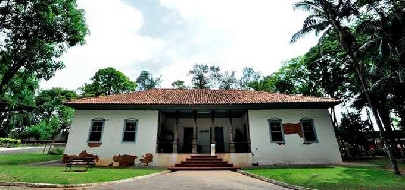

• TEATRO SESI
Nascido como Teatro Popular do Sesi nos anos de 1960, ganhou a atual sede, na Avenida Paulista, em 1977, tornando-se um dos mais importantes espaços das artes cênicas e afirmando o Sesi-SP como um dos mais representativos produtores teatrais do país. A programação, 167 vezes premiada pela crítica especializada, coloca em cartaz montagens inéditas e festivais de dança para os públicos adulto e jovem, numa atividade permanente e com entrada gratuita.
O Teatro-Fórum, considerada uma das técnicas mais completas e elaboradas do Teatro do Oprimido, incita os espectadores a tomarem consciência da profunda mecanização, propondo alguns exercícios que colocam em evidência suas tensões, distensionando a atmosfera e integrando o público presente que propõe a resolução da cena. Apresenta ainda uma função pedagógica que transforma o fenômeno da representação teatral na soma de tentativas e soluções oriundas dos espectadores de forma organizada, agenciada e dirigida.
-

-

-
• O Museu histórico sorocabano
Para eternizar a memória e a História Sorocabana, o Museu Histórico Sorocabano nasceu no dia 03 de Março de 1954, com o ímpeto cosmopolita e proximista de nossa comunidade nas relações humanas que permearam o desenvolvimento de nossa Cidade.
Em Sorocaba, as discussões sobre a preservação da memória se iniciaram lideradas pelo professor Renato Sêneca de Sá Fleury, acompanhado dos historiadores Aluísio de Almeida e Antônio Francisco Gaspar, reunindo, através de campanha pública, o seu primeiro acervo de peças, que foram expostas em algumas salas do Gabinete de Leitura Sorocabano e, posteriormente, em um Casarão na Rua Padre Luiz, iniciando efetivamente suas atividades dentro das comemorações do III Centenário de Fundação de Sorocaba.
O Museu Histórico Sorocabano (MHS) se define como um espaço para preservar a memória da cidade e das pessoas que ajudaram a construí-la, focando no resgate do legado de nosso povo.
Com a inauguração do Parque Zoológico Municipal “Quinzinho de Barros”, o Museu Histórico Sorocabano se instalou no Casarão que fica dentro do parque, onde permanece até hoje. A área onde está o Zoológico Municipal pertencia à tradicional família sorocabana Prestes de Barros, que doou o terreno à Prefeitura de Sorocaba, que o transformou em zoológico.
A principal finalidade do Museu Histórico Sorocabano é colecionar, conservar e apresentar em exposições para fins de estudo, educação, contemplação e recreação, objetos, pinturas, esculturas e documentos de significação histórica para a cidade de Sorocaba e sua região.
• Biblioteca Municipal de Sorocaba
Reunindo importante acervo em livros, periódicos e jornais, a Biblioteca Municipal foi criada em 1979. Funcionou por algum tempo na sede da Biblioteca Operária, à Rua Comendador Oeterer (hoje, Academia Sorocabana de Letras), na Rua da Penha, depois para o Largo de São Bento e no Terminal Santo Antônio, conquistando o prédio próprio em 2004. Atualmente se encontra instalado no Alto da Boa Vista, ao lado da Prefeitura de Sorocaba.
A Biblioteca abriga mais de 40 mil volumes, entre literatura nacional, estrangeira, infantojuvenil e de pesquisa. Conta com setores de Obras Raras, Autores Sorocabanos, Hemeroteca (arquivo de recortes de jornais), Periódicos (jornais e revistas) e obras adaptadas pelo sistema Braille para portadores de deficiência visual. Oferece um auditório de 110 lugares para palestras, cursos e área de exposição. Periodicamente, são organizadas mostras de artes plásticas.
• Teatro Municipal Teotônio Vilela
A construção do Teatro Municipal Teotônio Vilela (TMTV) foi iniciada em 1979, com projeto doado ao município pelo arquiteto paulista Luiz Artur Navarrette. Em estilo brutalista, que privilegia os elementos estruturais da edificação, caracterizado pelo concreto armado.
Inaugurado em 29 de janeiro de 1983, o Teatro Municipal conta com uma sala de espetáculos para 414 pessoas, cuja dimensão do palco é: 12mX6m e 10m de profundidade, além de possuir 4 camarins individuais e 2 coletivos (sendo 1 feminino e 1 masculino). A área de construção é de 4500m², na qual foram usados cerca de 3000m3 de concreto e 208 mil quilogramas de aço, tendo sido escavados cerca de 5000m³ de rocha. A edificação ainda conta com um Teatro de Arena, em sua área externa, o qual está submerso a cinco metros abaixo do lago que circunda o complexo.
Entre 2014 e 2015, o Teatro Municipal Teotônio Vilela, passou, por um processo de melhorias, com a modernização dos equipamentos de som e luz, além da reforma em sua infraestrutura.
Atualmente a plateia do Teatro conta com 414 lugares (406 poltronas padrão, 4 poltronas para obesos e 4 espaços reservados para cadeirantes) distribuídos em plateia geral e um foyer para a recepção dos espectadores e equipamentos cênicos de última geração.
• Museu de Arte Contemporânea de Sorocaba
O MACS é um museu privado gerido por pessoas da sociedade civil, entre eles empresários, artistas, educadores, intelectuais e produtores culturais. A Oscip foi fundada em 2004 com o objetivo de criar e administrar um museu de arte contemporânea na cidade de Sorocaba.
É uma instituição cultural eminentemente artística e educativa, espaço dinâmico e plural que prioriza a difusão das artes visuais. Democrática, aberta e acessível a todas as camadas da população e seu acervo tem foco na arte contemporânea brasileira.
O principal objetivo do MACS é ser uma instituição cultural de excelência, com visão prospectiva, e capaz de operar no mesmo nível de qualidade das mais destacadas instituições congêneres do país. Sua programação tem forte preocupação educativa e abarca as mais variadas tendências artísticas e contemporâneas.
A descentralização da cultura é uma das importantes características deste museu. O museólogo Prof. Dr. Fábio Magalhães é o responsável pelo projeto museológico e Diretor Artístico do museu, além de ser um dos maiores entusiastas e apoiador do projeto desde seu início.